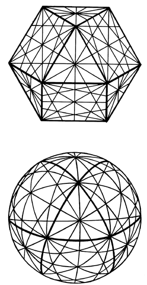

|  |
| Fig. 450.11B Projection of 25 Great-Circle Planes in Vector Equilibrium Systems: The complete vector equilibrium system of 25 great-circle planes, shown as both a plane faced-figure and as the complete sphere (3 + 4 + 6 + 12 = 25). The heavy lines show the edges of the original 14-faced vector equilibrium. |